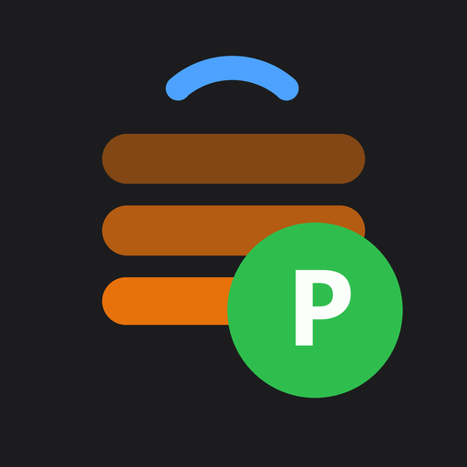
A Wear OS app for TinyMaker resin printers and Bambu Lab printers. See how the print is going without walking to the printer or opening your phone.
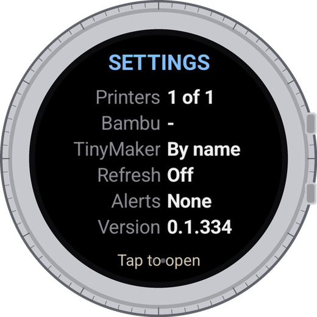
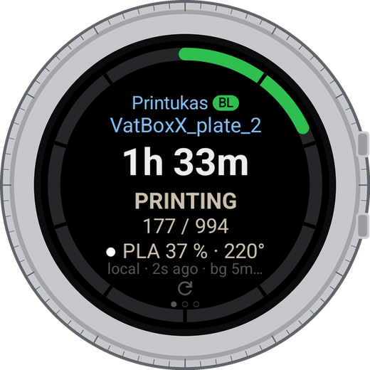
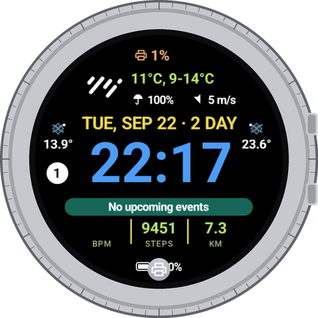
Every printer on its own page, with a ring that fills as the print goes.
When a print finishes, pauses or stops with an error.
Complications and a tile with up to two printers, printing ones first.
Turn the bezel or swipe sideways to move between printers; the settings page is last. Bambu Lab printers come first, TinyMaker after them. Opening the app shows the printer that is printing.
Time left in big letters, then the state, the layer and the filament or resin. The ring around the screen fills as the print goes.
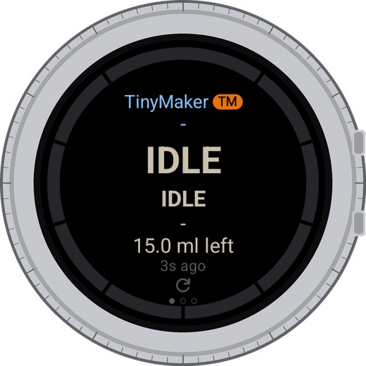
The printer is on and answering, nothing is printing. For a TinyMaker the app also shows how much resin is left in the vat.
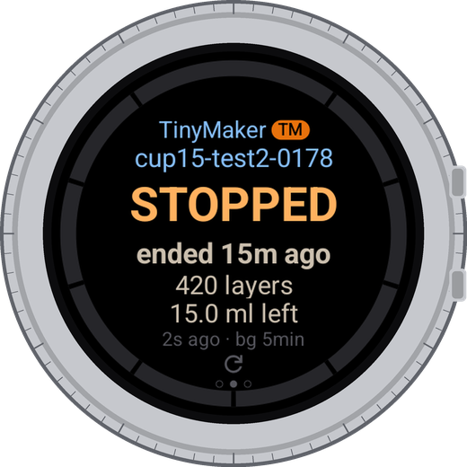
After a print the page keeps the result for a while: how it ended and when, the layers and the material used.
The last page is a summary: printers shown, Bambu Lab account, how TinyMaker is found, background checking, alerts and the version. Tap it to open the settings.
The line under the numbers says how the reading arrived and how old it is: local - straight from the printer on your Wi-Fi, cloud - through your Bambu Lab account, and bg 5min - how often the watch checks while a print runs.
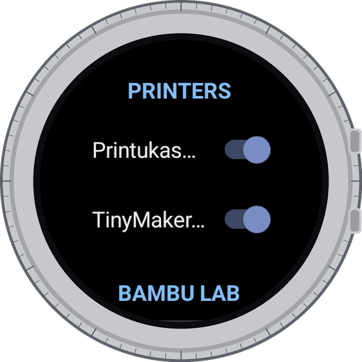
Every printer with a switch: on means it gets its own page, the tile and the complications. Off keeps it in the list but out of the way.
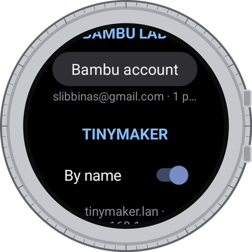
Sign in, refresh the printer list or sign out. Signing out deletes the token and the printer access codes from the watch.
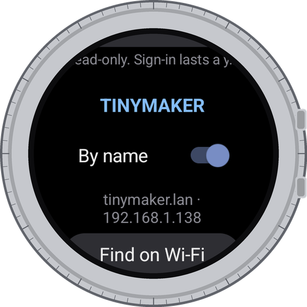
By name shows what was found, for example tinymaker.lan and its address. Below it is the list of printers added by IP.
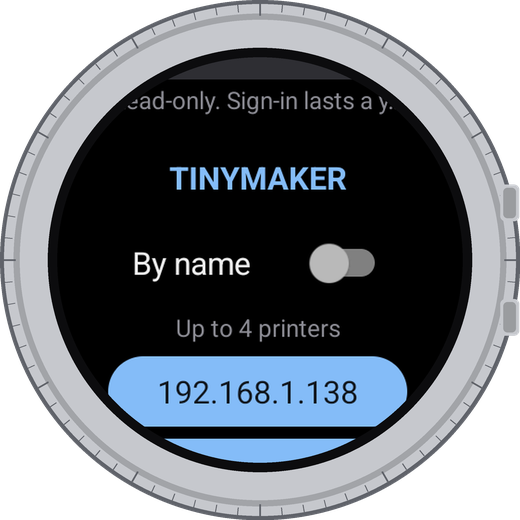
The watch checks its own network and adds the printers it finds. Up to four TinyMaker printers, plus the Bambu Lab printers from your account.
A TinyMaker printer with TinyMakerWifi firmware on the same Wi-Fi as the watch. By name finds a single printer by itself. For a second printer, or if the name does not work on your router, use Find on Wi-Fi: the watch looks through your home network and adds every TinyMaker it answers to. You can also type an IP address by hand.
Sign in with your Bambu Lab account. Bambu Lab sends a code to your e-mail, and the watch asks for it once; the sign-in then lasts about a year. The password is never stored. On the same Wi-Fi the watch reads the printer directly, otherwise through Bambu Lab's servers.
TinyStatus on the phone is a helper, not a second app: it installs, updates and opens the watch app, and it can set up both printers for you, where typing is easier. Bambu Lab account: e-mail and password, then the code from the e-mail. TinyMaker: by name or by IP address; after saving, the watch asks the printer right away and tells you whether it answered. Everything goes straight to the watch; the phone keeps nothing.
Settings → Refresh sets how often the watch reads the printers while a print is running: off, every 30 s, 2, 5 or 10 minutes. It starts when you leave the app during a print and stops by itself about 20 minutes after the print ends, so it does not sit in the background for nothing. While it runs, the watch shows an ongoing notification with the progress; tapping it opens the app.
Battery: each check wakes Wi-Fi for a few seconds. Every 30 s is meant for the end of a print, not for a whole night; 5 or 10 minutes is enough for long prints.
Notifications for a finished print, a pause, an error, and for a TinyMaker also for resin running low. Each one can be turned off. With background checking off there are no alerts at all - nobody is watching.
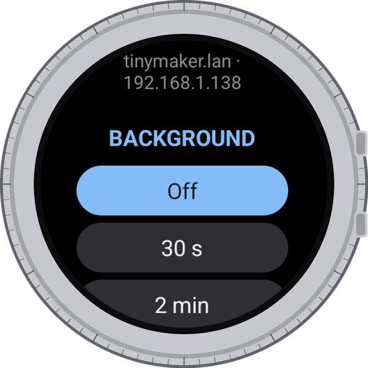
Complications show progress, time left or a ring on your watch face; the Printers tile shows up to two printers side by side, the printing ones first. Add them the usual way: long-press the watch face for complications, swipe left from it and use + for the tile.
No ads, no analytics, no tracking, and no server of ours. The app only reads printer status; it never controls the printer. Everything stays on the watch, except what has to go to your own printer or to your Bambu Lab account. TinyStatus is free, and TinyMaker support stays free. The full policy: tinyowllabs.com/tinystatus/privacy